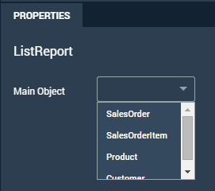

Once you have created or imported a data model you can start using the smart
templates.
Procedure
- From your data model, click the paintbrush icon .
- Under ListReport Smart Template click
Add.
- By default you land on the New Page screen. Click the default page proposed,
Page 1.
- The ListReport section under Properties is pre-populated
with properties from your data model. Select the object that you want to use as
your main object. When you select the main object you bind the list report to
the object page.

- Drag the controls from the Control palette to the outline to create
fields in the List Report.
- Select elements in the Outline and enter values for the
properties.
- Add table objects where necessary.